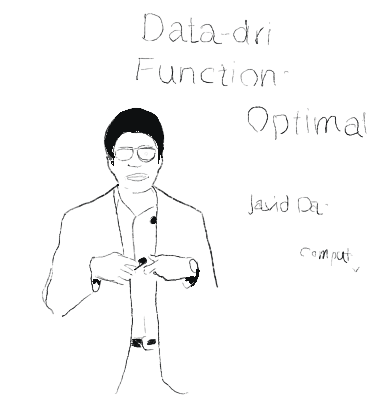

I whipped up this little piece of art that changes every time you click on it.
I am grateful to be invited to give talks about my projects.

Sharing my work with others is both a privilege and an opportunity to connect with those who are passionate about advancing research and technology.
I’m thankful for the chance to engage with such insightful audiences and learn from their perspectives as well. I would be more than happy to speak about machine learning and its applications to connectomics and neuroimaging at future events.
Feel free to reach out!
Acronyms Explained
MGH
Massachusetts General Hospital
MIT
Massachusetts Institute of Technology
CISS
Annual Conference on Information Sciences and Systems
Martinos
Athinoula A. Martinos Center for Biomedical Imaging
JHU
Johns Hopkins University
Title
Date
Host
Records
Info
AI in Neuroimaging: Tools and Techniques from Connectomes to Synthetic Data
Automated fetal brain extraction from MRI is a challenging task due to variable head sizes, orientations, complex anatomy, and prevalent artifacts. While deep learning (DL) models trained on synthetic images have been successful in adult brain extraction, adapting these networks for fetal MRI is difficult due to the scarcity of labeled data, leading to increased false-positive predictions. To address this, we propose a test-time strategy that reduces false positives in networks trained on sparse, synthetic labels. The approach uses a breadth-first scan (BFS) to identify a subvolume likely to contain the fetal brain, followed by a depth-focused sliding window (DFS) search to refine the extraction, pooling predictions to minimize false positives. We train models at different window sizes using synthetic images derived from a small number of fetal brain label maps, augmented with geometric shapes. Each model is trained on diverse head positions and scales, including cases with partial or no brain tissue. On clinical HASTE scans of third-trimester fetuses, our framework matches state-of-the-art brain extraction methods and exceeds them by up to three Dice points in the second trimester and for EPI scans. These results demonstrate the utility of a sliding-window approach, which improves brain-extraction accuracy by progressively refining the regions of interest, minimizing the risk of missing brain mask slices, or incorrectly identifying other tissues as brain.
Machine Learning Tools in Computational Neuroimaging: From Connectomes to FIT
Automated fetal brain extraction from MRI is a challenging task due to variable head sizes, orientations, complex anatomy, and prevalent artifacts. While deep learning (DL) models trained on synthetic images have been successful in adult brain extraction, adapting these networks for fetal MRI is difficult due to the scarcity of labeled data, leading to increased false-positive predictions. To address this, we propose a test-time strategy that reduces false positives in networks trained on sparse, synthetic labels. The approach uses a breadth-first scan (BFS) to identify a subvolume likely to contain the fetal brain, followed by a depth-focused sliding window (DFS) search to refine the extraction, pooling predictions to minimize false positives.
We train models at different window sizes using synthetic images derived from a small number of fetal brain label maps, augmented with geometric shapes. Each model is trained on diverse head positions and scales, including cases with partial or no brain tissue. On clinical HASTE scans of third-trimester fetuses, our framework matches state-of-the-art brain extraction methods and exceeds them by up to three Dice points in the second trimester and for EPI scans. These results demonstrate the utility of a sliding-window approach, which improves brain-extraction accuracy by progressively refining the regions of interest, minimizing the risk of missing brain mask slices, or incorrectly identifying other tissues as brain.
Data-driven Methods for Functional Connectomes using Optimal Transport